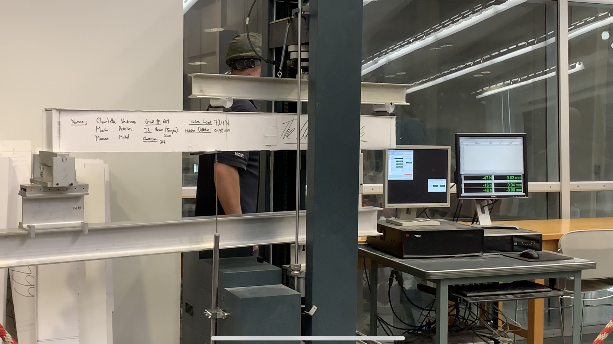
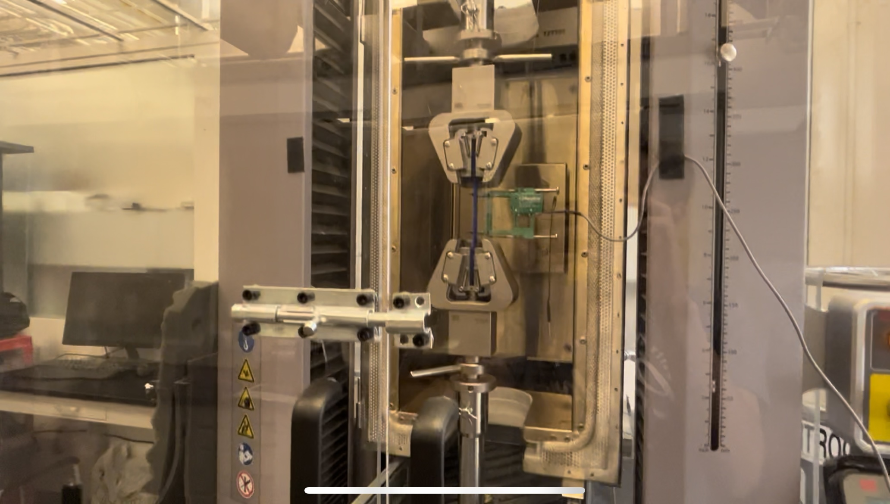
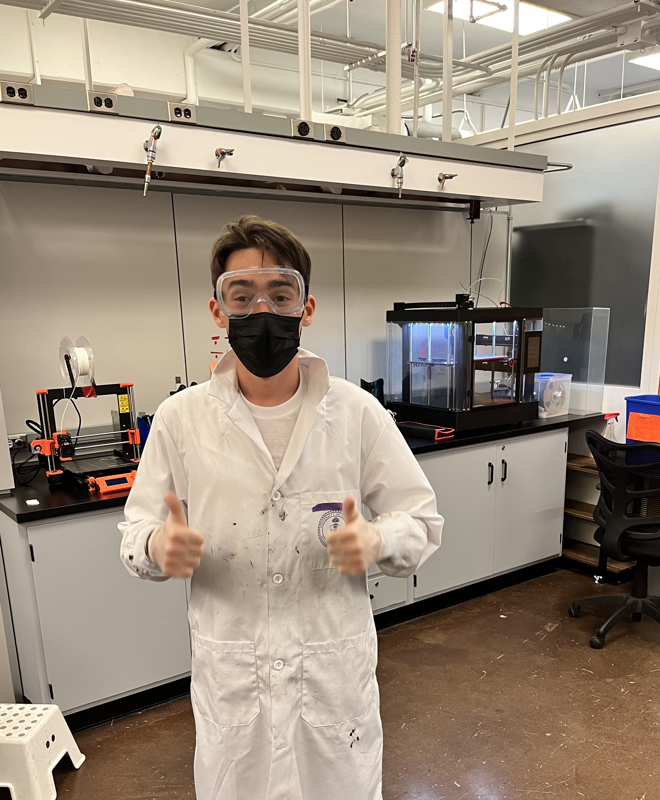
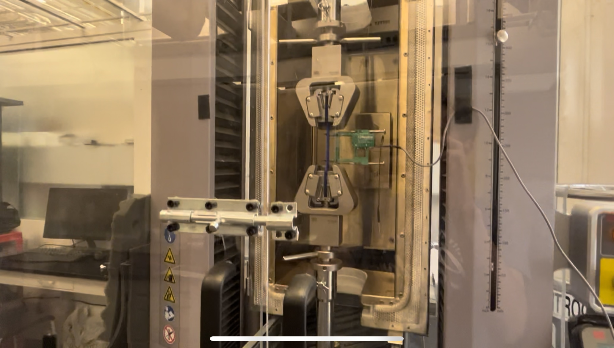
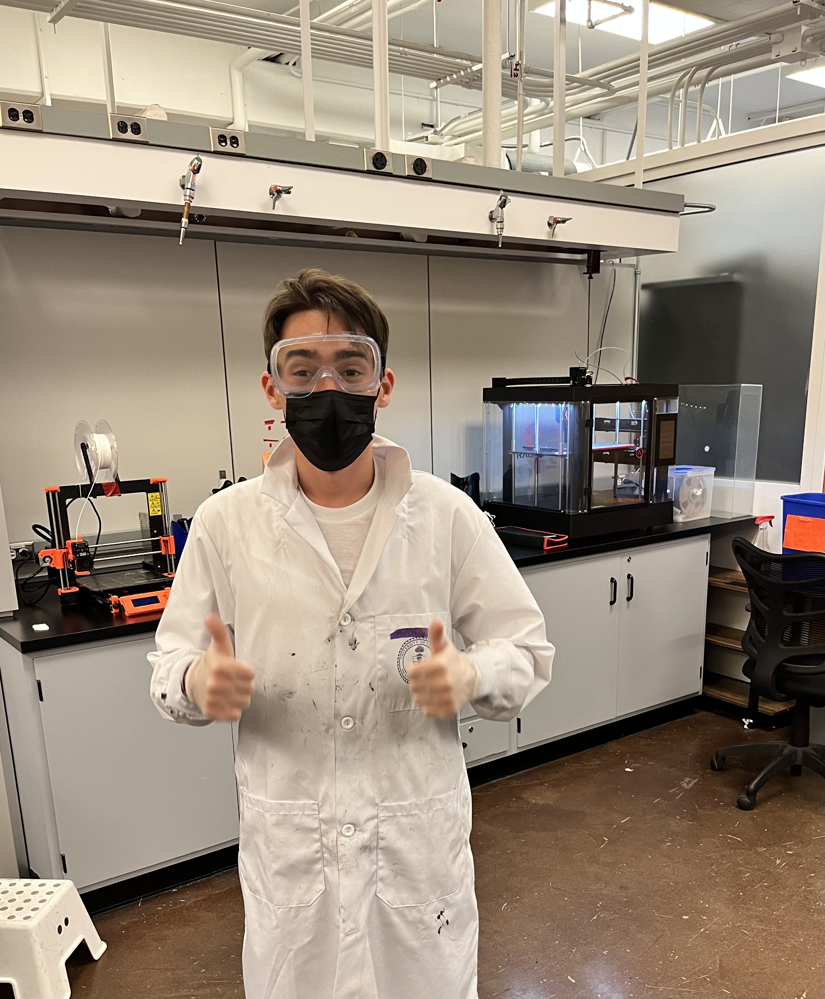

UTAT is as a student-run, student-funded satellite design team based out of Toronto, Canada
I have been working on UTAT's "FINCH" 3U CubeSat Mission, since my first year at UofT
Publication:
I am the current Mission Operations Lead for the FINCH Mission
I am in charge of the development of spacecraft/ground modes of operations, the design of the ground station, mission simulations (ADCS dynamics model, optical camera model, thermal model), and operating the mission post-launch
I am also in charge defining Fault, Detection, Isolation and Recovery processes and error analysis to ensure the resolution of system issues
Attitue Determination and Control SystemsI have worked on facilitating the purchase of critical controls and localization components
I am a part of the Mentorship program at UTAT where I guide and help new members integrate within the team
I am also responsible for organizing events for onboarding
Currently I am leading a project to facilate the installation of a cleanroom for the assembly and integration of our satellite
I am working with the optics team as a general engineer
I am currently working on sourcing space-grade optical components and testing of the optical payload system
I have worked on unit tests for our optical tradebook tool "Architect" which was used to drive design decisions for the payload
I became interested in drones, specifically drone racing, at the age of 13 where I learned to build my first drones and fly them in FPV
In the summer of 2023, I joined the Flight Systems and Controls laboratory where I expanded this hobby and discovered autonomous drone racing
During my internship, I was introduced to robotics research and worked to make valuable contributions to the autonomous robotics field
I co-authored and submitted a paper to the IEEE ICRA 2024 conference on work that I had worked on
Publication:
After my internship, I have remained apart of a research group in collaboration with the lab, to continue research in the autonomous drone racing field
My focus is currently in improving localization accuracy
The Matboard Bridge Design Contest is a Construction Project that allows first-year Engineering Science students to put into practice all of their understanding of material plate buckling and strucutural engineering.
The bridge must be built with only the provided peice of 1016 x 813 mm matboard paper and a tube of contact cement.
Matlab CodeA failure simulator was coded to test all of our different iterations to determine the optimal bridge for maximum failure load.
The bridge was designed in accordance with specifications required. The Matlab code was heavily used during this process to ensure that the failure loads were as high as possible while ensuring that there was enough material used. Hand calculations were also made to validate the code.
Engineering drawings were made to ensure the proper construction of the bridge.
The construction process took over 8 hours with 3 people!
The materials that make up the bridge are very simple: matboard and contact cement!
The bridge was tested on two points load and held until a maximum failure load of 1337!
🎉 The bridge came in the top 5 out of about 100 bridges 🎉

This project is one that I worked on at the Decisionics Laboratory at the University of Toronto
⚠️ Due to patentable information, not many details can be said about this project.
This project was aimed at improving the strength of 3D printed specimens using GCode modification. This project was the main of focus of my research on the summer of 2022. By writing scripts in Python, I generated GCode – which is the language that 3D printers read – to print specimens via different methods than those traditionally used. I then performed multiple tensile tests to compare the ultimate tensile stress and modulus of these coupons with coupons printed via traditional 3D printing methods. This project allowed me to truly experience the full process of doing research; I had to opportunity to formulate ideas, perform experiments on these and analyze the results. This truly gave me a sneak at what graduate students do for their Master’s or PhD’s which is something I would like to do after my undergraduate studies.
 



This project is one that I worked on at the Decisionics Laboratory at the University of Toronto
A Digital Image Correlation (DIC) system is a measurement tool for full 3D mapping of strains and deformations of material specimens in a non-contact manner. DIC can be applied in various fields, in large ranges in size scales (10^(-6) m to 10^2 m) and time scales (static to 5,000,000 FPS). DIC uses high speed digital cameras to map strains through continuously monitoring the relative position of points on the surface of the specimen. The DIC system quantifies small changes in the specimen geometry throughout the loading tests by continuously measuring all three normal strains.
I was in charge with another undergraduate student to develop and validate an ‘in-house’ DIC system using high end components. With this DIC system, I performed various tests on 3D printed samples and also performed various tests on concrete samples with a graduate student. This project taught me a lot about analysing specimens. I learned to use various softwares to capture tests using a DIC system and analyze the strain, stresses and deformations of such specimens.
In response to a design challenge aimed to help Ugandan farmers with the storage of crop, my team and I designed an innovative cooler, to aims to keep perishables fresh with a much lower electrical consumption than typical fridges.
The system makes use of evaporative cooling, in which air is blown through damp sponges. The resulting air is cooler than the incoming air and is blown inside the storage unit
.png "image 1")
All aspects of the cooler were designed and fabricated by us and the final results showed a 5-8 °C drop in temperature.
Noise pollution in a city like Toronto can be a big problem. As a way to mitigate this problem when purchasing a house, or selecting a hotel for a vacation, my team and I built "HushedHomes"
HushedHomes is a Web-App that allows users to get noise pollution information given an address, including: road sizes, aerial acitivity and airport proximity
It uses the Open Street Map data API to calculate distance from the input address to several noise factors